О компании
О компании
Важнейшим фактором успешной разработки природных богатств Сибири является развитие транспорта, который является ключом к богатейшим подземным кладовым Сибирского региона. И именно речной транспорт в условиях сибирского бездорожья имеет важное инфраструктурное значение, как для будущего региона, так и для экономического развития всей России. Важную деятельность по развитию этого вида транспорта в Обь-Иртышском бассейне осуществляет Томская судоходная компания.
Привлечение новых грузовых потоков, модернизация существующего флота и плавмеханизации, приобретение новых единиц транспорта позволили компании сохранить коллектив и выйти на новые рубежи роста. Теперь предприятие работает в круглогодичном режиме. По объемам грузоперевозок и обеспеченности стабильной клиентурой ТСК занимает одно из ведущих мест не только в Западной Сибири, но и среди предприятий отрасли. Без преувеличения можно сказать, что сегодня компания во многом определяет направление развития речного транспорта в регионе.
Необходимо отметить, что АО «ТСК» - единственное транспортное предприятие речной отрасли, получившее в 2006 году сертификат соответствия системы менеджмента качества на соответствие требованиям ГОСТ Р ИСО 9001-2008 (9001:2008) применительно к производству нерудных строительных материалов, перевозке грузов внутренним водным транспортом и погрузочно-разгрузочным работам. В 2007 году была принята программа развития АО «ТСК» на 2007-2011 годы. За эти годы намечено довести уровень перевозок грузов в Обском бассейне собственным флотом до 38% от общего объема, погрузочно-разгрузочных работ – до 50%. Объем поставок нерудных строительных материалов должен возрасти до 3450 тонн, доходы от основной деятельности до – 1323478 тысяч рублей. Запланировано приобретение самоходного флота с общей мощностью двигателей 3 тысячи л.с., несамоходного флота общей грузоподъемностью в 30 тысяч тонн. Наряду с привлечением новых грузопотоков уже несколько лет предприятие занимается модернизацией многочерпаковых земснарядов (ПЧС) и флота. На ПЧС налажена переработка добываемой песчано-гравийной смеси в ценный строительный материал – крупнозернистый песок (Модуль крупности от 2 до 3 мм), которого не бывает в естественных природных карьерах.
Освоено также производство собственной щебеночной продукции. АО «ТСК» - в полной мере социально ориентированное предприятие. Его работники пользуются множеством льгот и гарантий, закрепленных в коллективном договоре.
Администрация компании совместно с профсоюзным комитетом уделяют большое внимание охране здоровья каждого сотрудника.
Два раза в года все работники ТСК обязательно проходят профосмотр. При необходимости им оказывается помощь в получении стационарного лечения и приобретения путевок в дома отдыха и санатории, с которыми у компании заключены долгосрочные договоры. В бытовых помещения компании открыт здравпункт, где можно пройти необходимые физиопроцедуры, действует дневной стационар. Для работников предприятия оборудованы сауна и тренажерный зал, арендуется бассейн.
История
Меньше чем полвека назад мощный толчок развитию тогда еще Томского порта дало освоение нефтяных и газовых месторождений Западной Сибири. В 1965 году началось строительство Правобережного грузового района. В 1972 году была сдана в эксплуатацию первая очередь, оснащенная мощной причальной стенкой, современной крановой механизацией, подъемными путями. Все это позволило переваливать большие объемы грузов с железной дороги на воду. К концу 1980-х годов поставки нерудных материалов достигли рекордной цифры – 12 миллионов тонн в год. Еще больше возрос производственный потенциал речников с пуском второй очереди порта. Его динамичное развитие продолжилось до 1989 года. А потом дела резко пошли на спад. Практически прекратилась добыча нерудных материалов, мизерной стала перевалка грузов.
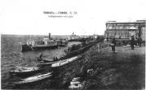Руководство Томского порта, который в 1990 году возглавил Владимир Антонович Кноль, предприняло энергичные действия, чтобы противостоять разрушительным тенденциям. Необходимо было изыскать новые грузопотоки, выстроить взаимоотношения с клиентами, организовать собственные грузопотоки. И это удалось сделать, несмотря на серьезные трудности переходного периода.
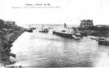В 1992 году предприятие стало акционерным обществом. Началось стремительное продвижение вперед.
Навигация 1844 года. В Томск прибывает первый в западной Сибири пароход «Основа».
Из Бийска в Томск отправляется в свой первый рейс по Оби пассажирский пароход «Кормилец»
В Томске открывает пароходство и начинает работу по перевозке пассажиров купец 2-й гильдии В.Е. Ельдештейн. В рейс отправляется пароход «Любимец».
Постановление Томской городской думы о создании городской пристани – «для упорядочивания работы причалов». За год на томских причалах было переработано 132 тысячи пудов различных грузов.
Начинаются работы по приведению в порядок Томи выше Томска: ежедневно на реке почти беспрерывно работает землечерпательная машина голландского производства.
С приходом в Томск железной дороги грузооборот городской пристани по сравнению с 1902 годом увеличился в 1.4 раза.
Начато строительство мастерских и устройство затона в Сенной Курье, ниже деревни Тигильдеево. Так было положено начало сегодняшней Моряковской ремонтно-эксплутационной базе флота.
По инициативе томских речников местные союзы судоходных рабочих и служащих и союзы грузчиков и чернорабочих объединяются в единый Союз судоходных рабочих и служащих рек Западной Сибири («Судосоюз»).
Из Бийска в Томск отправляется в свой первый рейс по Оби пассажирский пароход «Кормилец»
Декрет Совета Народных Комиссаров о национализации частно -владельческого флота.
Томская пристань имеет 4 причала, товары к которым доставляются на повозках. Перевозку грузов осуществляет акционерное общество «Транспорт».
Внедрение первой механизации: оборудована специальная линия для бункеровки пароходов углем в Черемошниках и установлены стационарные пластинчатые транспортеры на городском участке.
Начало масштабной реконструкции угольных причалов в Черемошниках.
На Томскую пристань для выгрузки пиломатериалов и круглого леса поступил первый кран грузоподъемностью в полторы тонны.
С началом освоения нефтяных месторождений Западной Сибири значительно увеличился объем грузооборота в Томском речном порту, который в связи с этим получил статус порта первого разряда.
Начало строительства Правобережного грузового района порта.
Томский речной порт возглавил И.Ф. Лавров.
Томский порт стал речными воротами Томского и Тюменского Севера. Он оснастился палубными судами грузоподъемностью от 1000 до 3000 тонн. Томский воднотранспортный узел стал основным отправителем для нефтяных месторождений области.
Начальником Томского речного порта назначен П.Т. Драчев.
Сдана в эксплуатацию первая очередь порта, оснащенная мощной причальной стенкой протяженностью 0,5 километра, 19 портальными кранами общей грузоподъемностью 209 тонн и мощными подъездными путями.
Приказом министра речного флота РСФСР Томское речное управление Западно-Сибирского речного пароходства и Томский речной порт объединены в одно предприятие.
Активное внедрение в портовом хозяйстве новых технологий и оснащение его современной техникой. К концу 80-х годов поставки нерудных материалов достигают рекордной цифры – 12 миллионов тонн в год. По внутренним перевозкам в Томской области удельный вес речного транспорта достиг 85 %.
Принят в эксплуатацию новый речной вокзал, ставший яркой визитной карточкой Томска.
Реформирование предприятия. Создание многопрофильного предприятия с различными видами деятельности – перевозкой грузов и пассажиров, погрузо-разгрузочными работами, добычей и поставкой нерудных строительных материалов, комплексным обслуживанием флота.
Руководство Томского речного порта возглавил В.А. Кноль.
Акционирование предприятия. Создание АООТ «Томский речной порт».
В связи с кризисом в дорожно-строительном комплексе потребность в нерудных строительных материалах снизилась до минимума. На первое место в деятельности предприятия вышли перевозки грузов. На базе АООТ «Томский речной порт» создано ОАО «Томская судоходная компания», идет интенсивное приобретение и модернизация буксирного флота.
На ПЧС-450 смонтирована первая дробильная установка для производства щебня.
1980-е гг. – завод КПД (крупнопанельного домостроения), домостроительный комбинат, ЖБК-100, ЖБК-40, Управление «Химстрой».
2000-е гг. – ОАО «Центрсибнефтепровод», НК «Юкос», «Лукойл», ОАО «Востокгазпром», ЗАО «Варьеган-нефтеспецстрой», Дирекция дорожного фонда и автобольных дорог по Томской области, ОАО «Нижневартовскнефтедорстройремонт», ОАО «ЖБК-100», ОАО «Карьероуправление», ООО «ЗКПД ТДСК», ОАО «Сибирский центр логистики», ОАО «Ханты-Мансийскдорстрой».
ТСК удалось переключить на себя клиентов, занимающихся перевалкой щебня с горных карьеров Кемеровской области, поставками шлака Кузнецкого и Западно-Сибирского металлургических комбинатов, а также кузбасского угля, которые поставлялись в Томскую область через Новосибирск.
Активно осваиваются маршруты по малым рекам на севере Томской и Тюменской областей.
Главный урок, извлеченный из свободного рыночного плавания – необходимость приобретения собственного флота и ставка на транзитные перевозки.Организовано производство собственной продукции.
Руководство
Председатель совета директоров – Владимир Антонович Кноль
Генеральный директор – Сергей Николаевич Ведерников
Коммерческий директор – Игорь Владимирович Асначев
Заместитель генерального директора по кадрам и быту – Анатолий Алексеевич Орлов
Главный инженер – Виталий Александрович Колмыков
Заместитель генерального директора по экономике – Наталья Валерьевна Моисеева
Главный бухгалтер – Елена Васильевна Сварцевич
Политика руководства компании в области качества
АО «Томская судоходная компания» осуществляет грузовые и пассажирские перевозки, добычу, переработку и поставку нерудных строительных материалов, погрузочно-разгрузочные работы, а также обеспечивает Томскую область и районы Крайнего севера социально-значимыми грузами, повышая этим качество жизни жителей населенных пунктов и региона в целом.
Основной целью деятельности предприятия является стремление в максимальной степени удовлетворить существующие и перспективные потребности потребителей в их желании получать качественную продукцию и услуги, а также достижение социального и финансового благополучия работников за счет получения прибыли по результатам производственной деятельности.
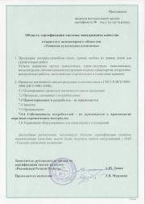Томская судоходная компания является лидером в отрасли и сохраняет эти позиции.
Руководство компании осознает ответственность за качественное выполнение работ и оказание услуг и берет на себя следующие обязательства:
• поддерживать и постоянно повышать результативность системы менеджмента качества в соответствии с требованиями стандарта ГОСТ Р ИСО 9001-2008 (ИСО 9001:2008);
• развивать и поддерживать долгосрочные партнерские отношения с потребителями и поставщиками;
• вовлекать, развивать и повышать лояльность персонала;
• использовать современные инновационные и научно-технические разработки в части модернизации и обновления основных фондов;
• эффективно использовать имеющиеся в распоряжении предприятия ресурсы;
• расширять ассортиментный список продукции и сферу деятельности компании;
Выполнение принятых обязательств, является неотъемлемым условием для мотивации персонала к качественному труду, постоянного улучшения своей деятельности и создания прочных деловых отношений с партнерами по бизнесу и обществом.
Структура предприятия
Служба перевозок и движения флота
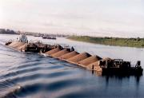В настоящее время на первое место по значимости выходит перевозочная деятельность, которую осуществляет служба перевозок и движения флота. Рыночные отношения вызвали необходимость приобретения собственного флота и организацию транзитных перевозок, поэтому еще с 1996 года предприятие начало приобретать флот. Перевозочная деятельность осуществляется на территории Томской, Новосибирской, Кемеровской областей, Ханты -Мансийского автономного округа. Основным родом грузов являются нерудные строительные материалы. Оптимизация работы флота сказалась на устойчивом росте транзитных перевозок.
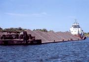Наряду с привлечением новых грузопотоков на предприятии активно занимаются модернизацией флота. На четырех теплоходах проекта 1741 была произведена замена главных двигателей NYD26 на отечественные ДРА 450. Это позволило, при сравнительно небольшом увеличении расхода топлива, повысить мощность теплоходов в полтора раза, грузоподъемность состава выросла с 6 до 9 тысяч тонн. Сегодня перевозки грузов приписным флотом играют доминирующую роль в общем объеме работ ТСК.
Начальник службы - Иван Филиппович Буховец
Правобережный перегрузочный комплекс
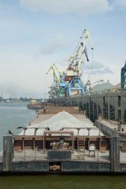Нынешний ППК – это восемь причалов, общей протяженностью 781 м, оснащенных 22 портальными кранами различной грузоподъемности. Общая протяженность железнодорожного подъездного пути составляет 3751 м. Высокая эффективность перевалки грузов с железной дороги на воду достигает за счет максимального использования крановой механизации и складских площадей в круглосуточном режиме. Большой вклад в бесперебойную работу сложного и насыщенного механизмами хозяйства ППК вносят коллективы специализированных служб и цехов.
История правобережного перегрузочного комплекса началась в 1971 году, когда была сдана в эксплуатацию первая очередь порта.Начальник ППК - Виктор Васильевич Головков.
Верхне-Томский перегрузочный комплекс
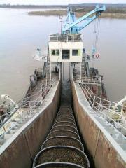Важнейшей составляющей деятельности ТСК является добыча и переработка нерудных строительных материалов. Это основной вид деятельности Верхнее -Томского перегрузочного комплекса. В настоящее время Верхнее -Томский перегрузочный комплекс представляет собой высокомеханизированное безотходное производство, выпускающее широкий ассортимент продукции, пользующейся большим спросом у дорожников и предприятий строительной индустрии Западно – Сибирского региона. За последние годы значительно увеличились объемы производства и поставок щебня, мелкой фракции и природного песка. Сегодня ВТПК является единственным в Сибири производителем обогащенного крупнозернистого песка.
К концу 1980-х годовая добыча песчано - гравийной смеси достигла рекордной отметки – 12 миллионов тонн. Но в начале 1990-х годов для ВТПК наступили тяжелые времена. Потребность строителей в ПГС упала до минимума: вступил в силу запрет на русловую добычу. Реальным выходом из сложившейся ситуации стало освоение Айдаковского островного месторождения. Для выхода из кризиса специалистами компании была разработана уникальная технология по углубленной переработки ПГС. В 1999 году на ПЧС-450 была смонтирована первая установка для производства щебня. А уже через год его выпуск составил 50 тысяч тонн.Начальник ВТПК - Александр Викторович Козырев
Пассажирский район
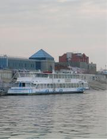Пассажирский район ТСК является не только водными воротами, но и яркой визитной карточкой Томска. В 1982 году был построен современный Речной вокзал. В помещении вокзала есть все необходимое для пассажиров, здесь можно приобрести билеты практически на все виды транспорта. В период навигации Томская судоходная компания выполняет регулярные пассажирские рейсы пригородного и местного сообщения теплоходами «Москва» и «Заря». Часто организуются прогулочные рейсы для горожан, выезды трудовых коллективов предприятий и организация города на отдых.
Начальник пассажирского района - Василий Иванович Павлусь
Вспомогательные службы
Конечный успех работы всей компании во многом зависит от эффективной деятельности ее вспомогательных служб.Отдел главного механика
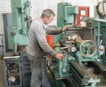Отдел главного механика объединяет коллективы ремонтно-механических мастерских, котельно-сварочного и токарного цехов. В обязанности коллектива ОГМ входит ремонт средств механизации, флота, земснарядов и другого оборудования. Специалисты отдела принимали активное участие в модернизации ПЧС-450.
Начальник отдела – Евгений Васильевич Сапунов
Отдел главного энергетика
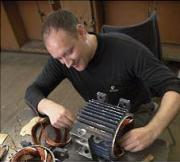Специалисты отдела главного энергетика осуществляют собственными силами большинство сложных работ – ремонт крановых электродвигателей, силового оборудования и средств автоматизации. В последние годы продолжена работа по замене кабельных трасс на территории ППК: проложено более 1000 метров высоковольтного и низковольтного кабеля, что составляет 12-15 % от протяженности внутренних кабельных линий. В связи с ростом объемов перерабатываемых грузов, работы крановой механизации в грейферном режиме, потребление электроэнергии на предприятии в период с 2002 по 2006 год увеличились на 24 %.
Начальник отдела – Сергей Иванович Привезенцев
Служба судового хозяйства
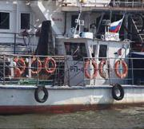Одной из задач коллектива является техническое обеспечение бесперебойной работы флота. Серьезная работы проведена по развитию ремонтной базы и приобретению главных и вспомогательных двигателей. В 2006 году приобретен новый современный стенд по регулировке топливной аппаратуры стоимостью 600 тысяч рублей, введен в строй цех по ремонту судовых двигателей, столярный цех, цех по изготовлению резино -технических изделий, бытовые помещения, что позволило не только улучшить качество ремонта, но и значительно сократить его сроки. Флот компании на 1 января 2008 года составляет 115 единиц, в том числе: пассажирский – 7, транспортный – 18, рейдово-маневровый – 6, служебно-вспомогательный – 7, стоечно-вспомогательный – 5, несамоходный – 72.
Начальник отдела – Михаил Валентинович Васильев
Автотранспортный отдел
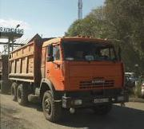Автотранспортный парк ТСК насчитывает 43 единиц техники. Это обеспечивает потребности компании в автотранспортных услугах и при выполнении других производственных задач. Доставка работников компании на работу и с работы осуществляется собственными одиннадцатью автобусами. За последние пять лет приобретены: три автобуса ПАЗ, три фронтальных погрузчика ТО-28, три бульдозера Т-130, поливомоечная машина.
Начальник отдела – Владимир Николаевич Кучин